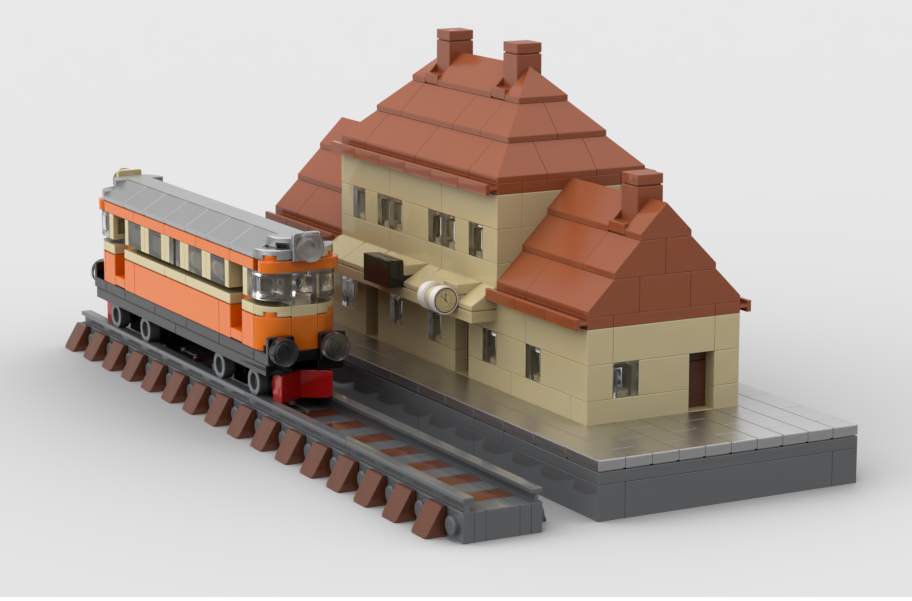
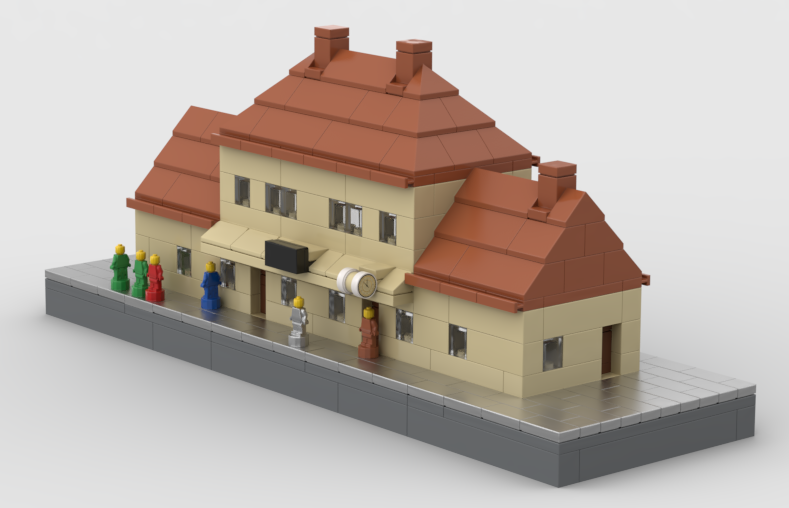
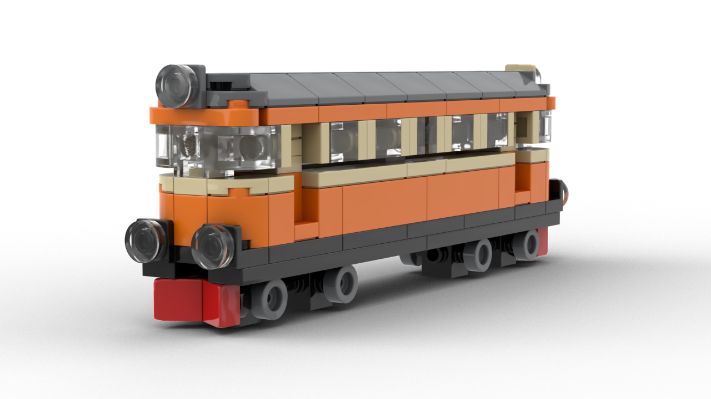
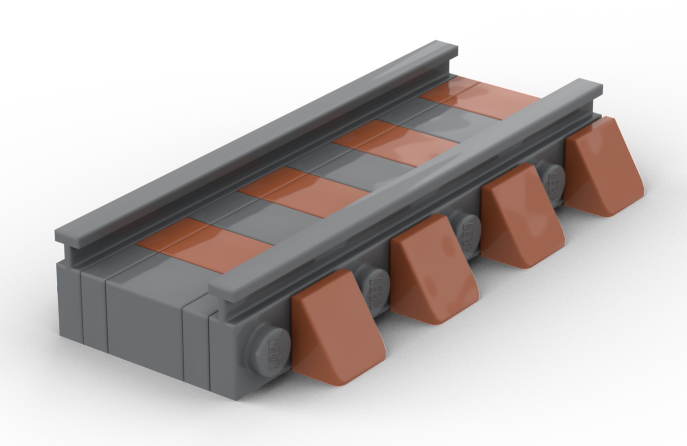

OCKELBO
SJ YP • 1960-TALET

Små byggstenar, stora minnen
En liten modell av en resa genom Ockelbo – inspirerad av SJ YP, stationen och 1960-talet.
Bygginstruktioner

Öppna PDF
Öppna PDF
Öppna PDFSJ YP • 1960-TALET

En liten modell av en resa genom Ockelbo – inspirerad av SJ YP, stationen och 1960-talet.

Öppna PDF
Öppna PDF
Öppna PDF